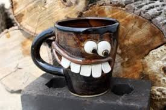
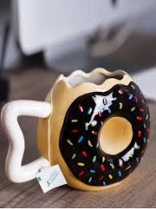

<h1>Göresellerle çalışmak</h1>
<h2>İlginç kupa görselleri</h2>
<!-- img-src:kaynak demek, alt:resim altında açıklama -->
<!-- websitesinden alınan görsel -->


<!-- lorem picsum sitesinden alınan görsel -->


<!-- masaüstüne kaydedilip eklenen görsel -->


<!-- en ve yükseklik -->


 <!-- border: çerçeve ekler -->
 

 <!-- algin:resmin gözükeceği pozisyon. left,right -->
 